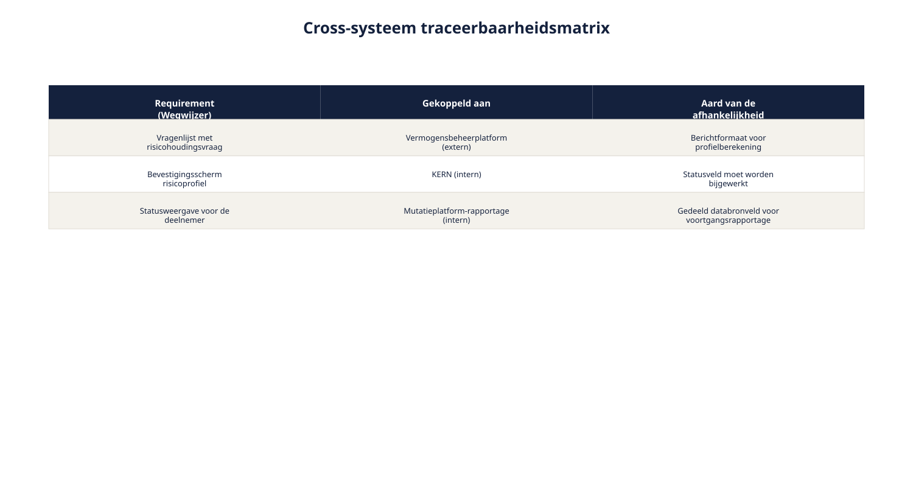
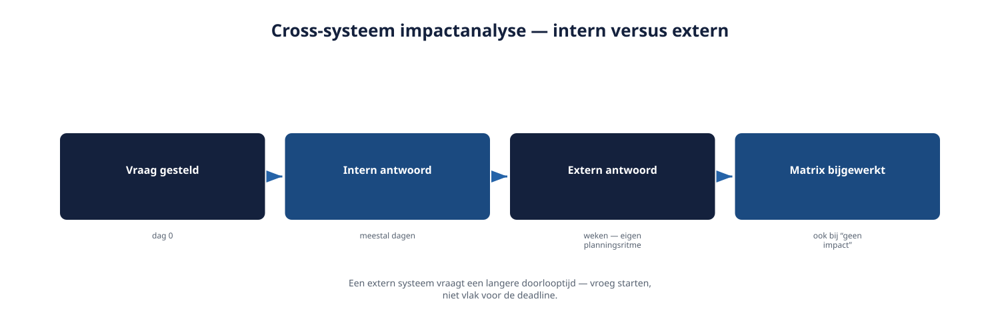

Cursus Requirements engineering · Niveau 2 (CPRE Advanced Level) · Deel 18 van 30
Traceerbaarheid en impactanalyse, over systemen heen.
Een kleine wijziging in Wegwijzer kan een aanpassing vergen bij het KERN-team, of bij een externe partij die niet onder Rubens gezag valt. Dit deel breidt traceerbaarheid en impactanalyse uit niveau 1 uit tot over systeemgrenzen heen: de cross-systeem traceerbaarheidsmatrix maakt koppelingen zichtbaar, en een vaste aanpak helpt bij impactanalyse op een systeem dat u niet zelf beheert.
7secties
±2uleestijd + werkboek
6controlevragen
5stappen cross-systeem impactanalyse
Positionering. Deze cursus is een voorbereiding op de CPRE Advanced Level-certificering van IREB en is uitdrukkelijk geen vervanging van het officiële syllabus- en examenmateriaal van IREB, te raadplegen via ireb.org.
Niveau 2: 11 RE-strategie kiezen → 12 Stakeholderanalyse gevorderd → 13 Techniekkeuze programmaniveau → 14 Consolidatie en conflicthantering → 15 Modeling: context/doel/gedrag → 16 Modeling: data en beslisregels → 17 Attributen, prioritering en baselines → 18 Traceerbaarheid en impactanalyse (hier) → 19 Wijzigingsbeheer, meten en rapporteren → 20 AI4RE → 21 RE@Agile → 22 Examentraining + capstone
01
Waar dit deel over gaat
⏱ 8 min
Dit deel bouwt direct voort op deel 17: waar eigenaarschap en afhankelijkheid zichtbaar maken dát een requirement van een ander systeem afhangt, laten traceerbaarheid en impactanalyse zien wélke gevolgen een wijziging over systeemgrenzen heen heeft — en hoe u die gevolgen bepaalt wanneer het systeem in kwestie niet onder uw eigen mandaat valt.
Aan het eind van dit deel kunt u:
traceerbaarheid uit niveau 1 uitbreiden over systeemgrenzen heen;
een cross-systeem traceerbaarheidsmatrix opstellen;
impactanalyse uitvoeren die verder reikt dan één systeem;
impactanalyse uitvoeren op een systeem waar u geen mandaat over heeft;
uitleggen hoe dit deel bijdraagt aan spanningsveld 3 (beheer over systeemgrenzen).
02
Een kleine wijziging, een grote impact
⏱ 10 min
Sven stelt voor om de vragenlijst met één vraag uit te breiden: een expliciete vraag naar de reactie van de deelnemer op een fors dalend scenario, om de risicohouding scherper vast te stellen. Op het eerste gezicht een kleine wijziging — één extra scherm in Wegwijzer.
"Eén schermpje erbij, dat moet toch snel te doen zijn?"
"Ligt eraan. Het antwoord op die vraag gaat ook mee in het bericht naar het vermogensbeheerplatform. Hun systeem verwacht een vast aantal invoervelden voor de risicoprofielberekening — een extra veld vereist een aanpassing aan hún kant."
Bij nadere impactanalyse blijkt het antwoord op deze vraag dus ook een externe partij te raken die Ruben niet zelf kan instrueren, en die een eigen doorlooptijd voor wijzigingen hanteert. Dit is precies waarom impactanalyse op programmaniveau een ander soort werk is dan in niveau 1: de impact van een kleine wijziging kan zich uitstrekken tot ver buiten het systeem waarin de wijziging werd voorgesteld.
03
Traceerbaarheid over systeemgrenzen
⏱ 12 min
De terugwaartse en voorwaartse traceerbaarheid uit niveau 1 — van requirement naar herkomst, van requirement naar ontwerp en test — blijft het uitgangspunt. Op programmaniveau moet deze keten nu ook tussen systemen lopen: een requirement in Wegwijzer kan een voorwaartse link hebben naar een requirement, interfacecontract of afspraak in een ander systeem.
Figuur 18-1 — een traceerbaarheidsketen die van een belanghebbende in Wegwijzer, via een requirement, naar een interfacecontract met het vermogensbeheerplatform loopt
Dit vraagt om een gedeeld, over-systemen-heen zichtbaar overzicht — niet alleen een traceerbaarheidsadministratie binnen Wegwijzers eigen documentatie, die voor het KERN-team of externe partijen ontoegankelijk zou zijn.
04
De cross-systeem traceerbaarheidsmatrix
⏱ 14 min
Een matrix die, per requirement, laat zien welke gekoppelde requirement of interface in een ander systeem ermee samenhangt, en wat de aard van die samenhang is.
Requirement (Wegwijzer)
Gekoppeld aan (systeem)
Aard van de afhankelijkheid
Vragenlijst met risicohoudingsvraag
Vermogensbeheerplatform
Berichtformaat voor profielberekening
Bevestigingsscherm risicoprofiel
KERN
Statusveld moet worden bijgewerkt
Statusweergave voor de deelnemer
Mutatieplatform-rapportage
Gedeeld databronveld voor voortgangsrapportage

Figuur 18-2 — de cross-systeem traceerbaarheidsmatrix, uitgebreid met eigenaarschap per gekoppeld systeem
Deze matrix is een uitbreiding van de beheerbasis uit deel 17 — specifiek het afhankelijkheid-attribuut — maar dan verzameld op één centrale plek zodat impactanalyse er systematisch tegen kan worden uitgevoerd, in plaats van dat elke requirement zijn afhankelijkheid geïsoleerd vermeldt zonder overzicht.
Controlevragen
Uit Werkboek deel 18, Opdracht 18.2 — Intern of extern, en welke aanpak?
1Een aanpassing aan hoe Wegwijzer de risicoprofielnaam toont — mogelijk relevant voor de Mutatieplatform-rapportage. Intern of extern, en welke aanpak?Toon antwoord
Intern. Rechtstreeks contact met het Mutatieplatform-rapportage-team.
2Een uitbreiding van het aantal scenario's dat aan de deelnemer wordt getoond — mogelijk relevant voor het vermogensbeheerplatform. Intern of extern, en welke aanpak?Toon antwoord
Extern. Formeel verzoek aan het vermogensbeheerplatform, met ruimere doorlooptijd.
3Een verzoek van de deelnemersraad om een extra toelichting in de vragenlijst — waarschijnlijk zonder cross-systeem impact, maar nog niet geverifieerd. Intern of extern, en welke aanpak?Toon antwoord
Onbekend, eerst te verifiëren. Begin met de matrix raadplegen; als er geen bekende koppeling is, is een lichte check bij Milan (architect) voldoende voordat verder werk wordt gedaan. Niet elke wijziging vereist automatisch een zware cross-systeem analyse — de matrix, plus een korte check, voorkomt juist onnodige impactanalyse.
05
Impactanalyse over systeemgrenzen
⏱ 16 min
De vier stappen van wijzigingsbeheer uit niveau 1 — vastleggen, impact bepalen, prioriteit heroverwegen, besluit — blijven onverkort gelden. Wat verandert, is hoe stap 2 (impact bepalen) wordt uitgevoerd. Binnen niveau 1 volstond het om de eigen traceerbaarheidsketen binnen één systeem te doorlopen. Op programmaniveau moet de cross-systeem matrix worden geraadpleegd, en soms is dat niet genoeg: een impactanalyse kan navraag vereisen bij een ander team of een externe partij die niet onder uw eigen gezag valt — een directe toepassing van "beïnvloeden zonder gezag" uit deel 12.
Figuur 18-3 — het uitgebreide wijzigingsbeheerproces met stap 2 opgesplitst in "eigen systeem" en "gekoppelde systemen, via de matrix"
Praktisch stappenplan voor cross-systeem impactanalyse:
Raadpleeg de cross-systeem traceerbaarheidsmatrix voor de betrokken requirement.
Voor elk gekoppeld systeem: stel vast of dit een intern deelsysteem is (eigen programma, ander team) of een extern systeem (buiten het programma).
Bij een intern deelsysteem: neem rechtstreeks contact op met het verantwoordelijke team, met een concrete vraag over de impact.
Bij een extern systeem: formuleer een formeel verzoek.
Verzamel de antwoorden en werk de matrix bij, ook als de impact uiteindelijk beperkt blijkt — dit voorkomt dat dezelfde vraag later opnieuw gesteld moet worden.
06
Impactanalyse op een systeem dat u niet zelf beheert
⏱ 16 min
Het vermogensbeheerplatform is een externe partij. U kunt er niet zomaar in kijken om zelf de impact te bepalen, zoals dat bij een intern systeem eventueel wel zou kunnen. Dit vraagt een andere aanpak.
Een formeel verzoek, vergelijkbaar met asynchrone consultatie. Stel een concrete, afgebakende vraag: niet "wat verandert er als wij een vraag toevoegen" (te open), maar "vereist een extra invoerveld in het risicoprofielbericht een aanpassing aan uw kant, en zo ja, wat is de verwachte doorlooptijd?" (concreet en beantwoordbaar).
Reken op een langere doorlooptijd. Een extern systeem heeft een eigen planning en prioriteiten die niet door het Wegwijzer-programma worden bepaald. Een impactanalyse op een extern systeem moet vroeg worden gestart, niet vlak voor een deadline — vergelijk de asynchrone consultatie bij de sociale partners: tijd voor een intern proces bij de andere partij inplannen, niet verwachten.
Documenteer het antwoord, ook als het "geen impact" is. Een expliciet "geen impact" antwoord van een externe partij is zelf waardevolle informatie, en hoort net zo goed in de matrix als een bevestigde impact — anders wordt dezelfde vraag bij een volgende wijziging opnieuw gesteld.

Figuur 18-4 — een tijdlijn van een cross-systeem impactanalyse bij een extern systeem, met de langere doorlooptijd zichtbaar gemaakt ten opzichte van een interne analyse
Controlevragen
Uit Werkboek deel 18, Opdracht 18.3 — Een formeel verzoek opstellen
4Wat hoort minimaal in een formeel verzoek aan een externe partij zoals het vermogensbeheerplatform?Toon antwoord
Een goed verzoek bevat: de concrete vraag ("vereist een extra invoerveld X in bericht Y een aanpassing aan uw kant?"), de context in één of twee zinnen (waarom deze wijziging wordt overwogen), een gevraagde reactietermijn die realistisch is voor een externe partij (bijvoorbeeld twee tot drie weken, niet "morgen"), en een contactpersoon voor eventuele vervolgvragen. Een veelgemaakte fout is een te open vraag ("wat verandert er allemaal?") die de externe partij dwingt zelf de precieze impact te reconstrueren — een scherp afgebakende vraag levert sneller en betrouwbaarder antwoord op.
07
Toegepast op Wegwijzer
⏱ 14 min
De impactanalyse van Svens voorstel — de extra vraag in de vragenlijst — volledig uitgewerkt:
Matrix geraadpleegd: de vragenlijst-requirement is gekoppeld aan het vermogensbeheerplatform via het berichtformaat voor de profielberekening.
Intern of extern: extern — het vermogensbeheerplatform valt buiten het programma.
Formeel verzoek: een concrete vraag naar de impact van een extra invoerveld, met een gevraagde reactietermijn die rekening houdt met hun eigen planningsritme.
Antwoord verwerkt: stel dat het antwoord luidt dat een aanpassing nodig is met een doorlooptijd van zes weken — dit wordt teruggekoppeld aan Sven, Bram en de prioritering: de wijziging blijft mogelijk waardevol, maar de afhankelijkheid bepaalt nu mede wanneer hij haalbaar is.
Matrix bijgewerkt: de nieuwe afhankelijkheid en de vastgestelde doorlooptijd worden toegevoegd, zodat een volgende wijziging aan dit onderdeel niet opnieuw bij nul hoeft te beginnen.
Vroege signalering
Cross-systeem impactanalyse past niet vanzelfsprekend in een korte sprintcyclus, zeker niet wanneer een extern systeem een lange doorlooptijd hanteert. Dit vraagt om vroege signalering: al bij backlog-refinement inschatten of een voorgestelde wijziging mogelijk cross-systeem impact heeft, en zo ja, de formele consultatie direct starten — niet pas wanneer de wijziging aan de beurt is om gebouwd te worden. Een lichte "raakt dit een ander systeem?"-vraag, gesteld bij elke nieuw backlogitem, voorkomt dat deze vertraging pas laat aan het licht komt.
Controlevragen
Uit Werkboek deel 18, Opdracht 18.4 — Vroege signalering
5Stel een korte checklist op die het Wegwijzer-team bij elk nieuw backlogitem kan gebruiken om vroeg te signaleren of er mogelijk cross-systeem impact is.Toon antwoord
Voorbeeldchecklist: (1) Raakt dit backlogitem gegevens die worden uitgewisseld met KERN, het vermogensbeheerplatform, of de Mutatieplatform-rapportage? (2) Staat dit backlogitem al in de cross-systeem matrix, of is het nieuw? (3) Als het nieuw is: is er een reden om aan te nemen dat een ander systeem hierdoor wordt geraakt? (4) Zo ja: is dit systeem intern of extern, en is de impactanalyse al gestart?
6Waarom loont het om deze checklist als vast onderdeel van backlog-refinement in te bouwen, in plaats van cross-systeem impact pas te beoordelen wanneer een item aan de beurt is?Toon antwoord
Omdat een extern systeem — zoals het vermogensbeheerplatform — een eigen, vaak langere doorlooptijd hanteert die niet door het sprintritme van Wegwijzer wordt bepaald. Wordt de mogelijke impact pas laat ontdekt, dan is er geen tijd meer om die doorlooptijd te overbruggen zonder de release te vertragen. Vroege signalering start het formele traject parallel aan het sprintwerk, zodat het niet als verrassing tegen een deadline aanloopt.
Verder met deel 19
Traceerbaarheid en impactanalyse werken nu ook over systeemgrenzen heen, met de cross-systeem matrix als centraal instrument. Deel 19 rondt de Management-module af met wijzigingsbeheer, meten en rapporteren op programmaniveau — inclusief hoe u wijzigingen classificeert zodat niet elk verzoek dezelfde zware behandeling krijgt.